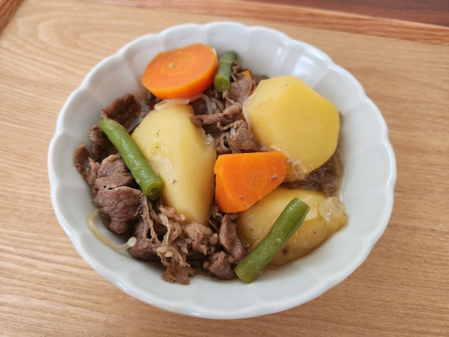

Nikujaga

Nikujaga is a Japanese dish of meat, potatoes, and onion stewed in sweetened soy sauce. It is a comfort food for many Japanese people.
Ingredients
- 1 tablespoon vegetable oil
- 8 snow peas
- ¼ pound sirloin steak, thinly sliced
- 4 potatoes, cut into bite sized pieces
- 2 cups dashi soup
- ¼ cup soy sauce
- ¼ cup sake
- 1 tablespoon white sugar
- 1 onion, chopped
Directions
- Heat oil in a large skillet over medium heat. Add snow peas and cook until bright green, about 2 minutes. Remove from skillet and set aside.
- Add steak to skillet and cook until browned, about 5 minutes. Remove from skillet and set aside.
- Add potatoes to skillet and cook until browned, about 5 minutes. Remove from skillet and set aside.
- Return steak to skillet. Add dashi, soy sauce, sake, and sugar. Bring to a boil, then reduce heat to low and simmer for 10 minutes.
- Add potatoes and onion to skillet. Cover and simmer until potatoes are tender, about 20 minutes.
- Stir in snow peas and cook for 1 minute. Serve hot.
Back to Recipes Home